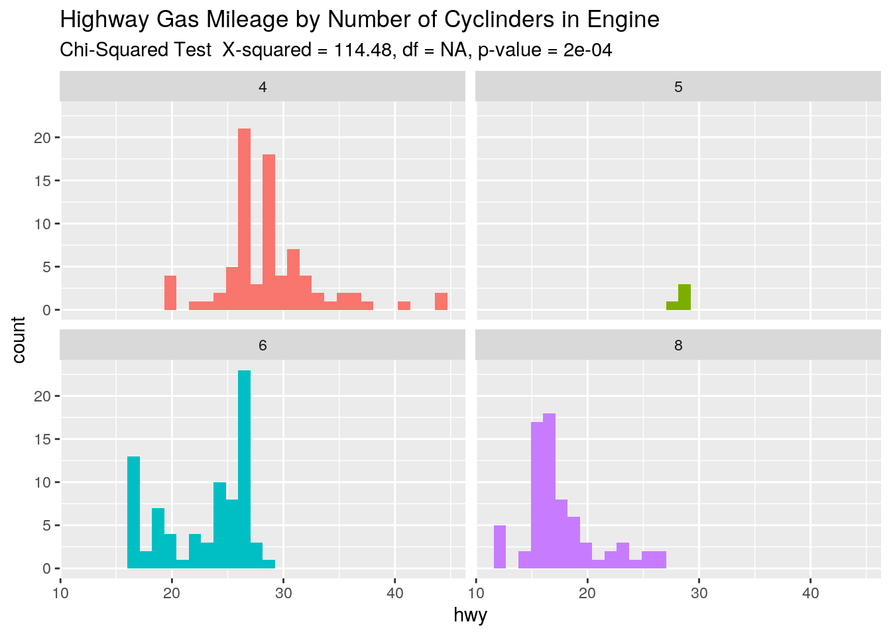
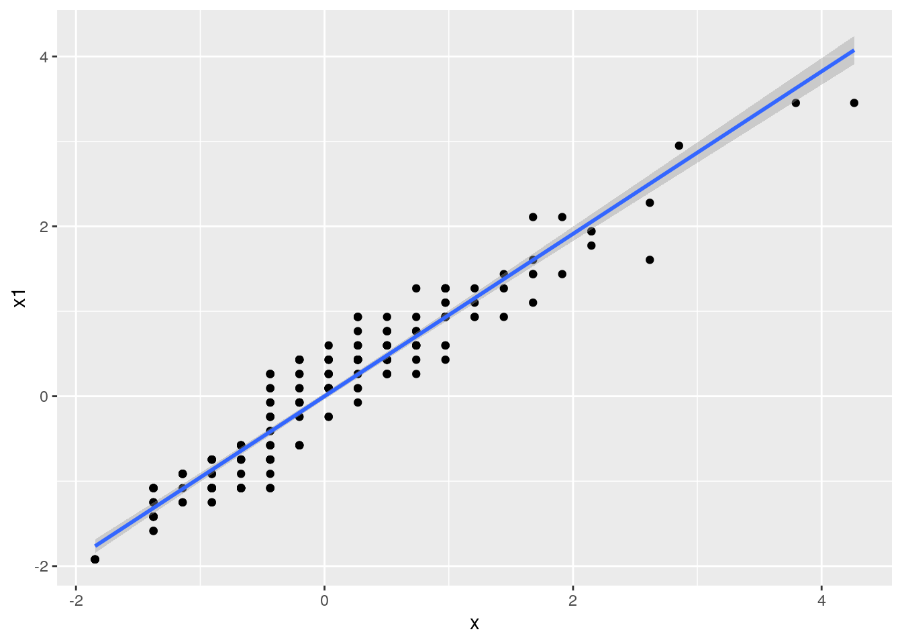
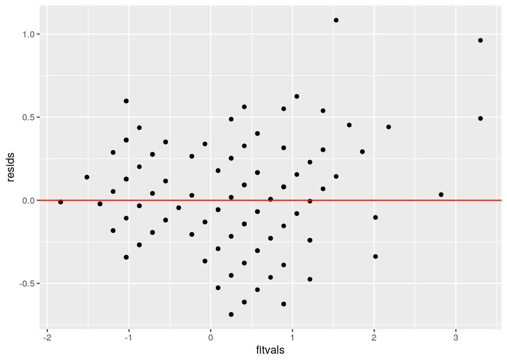
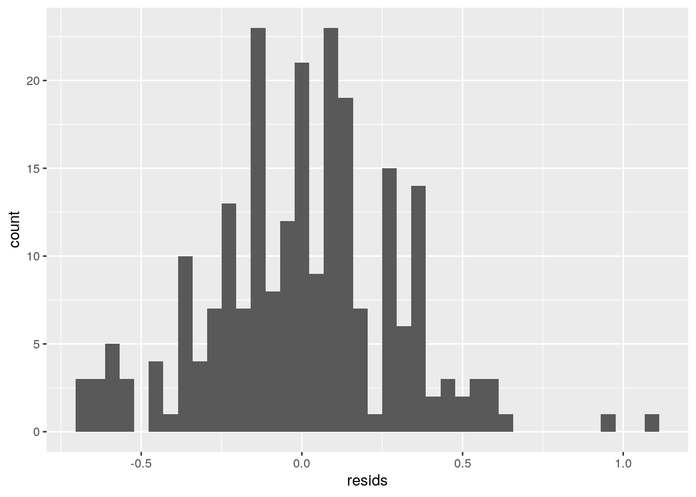
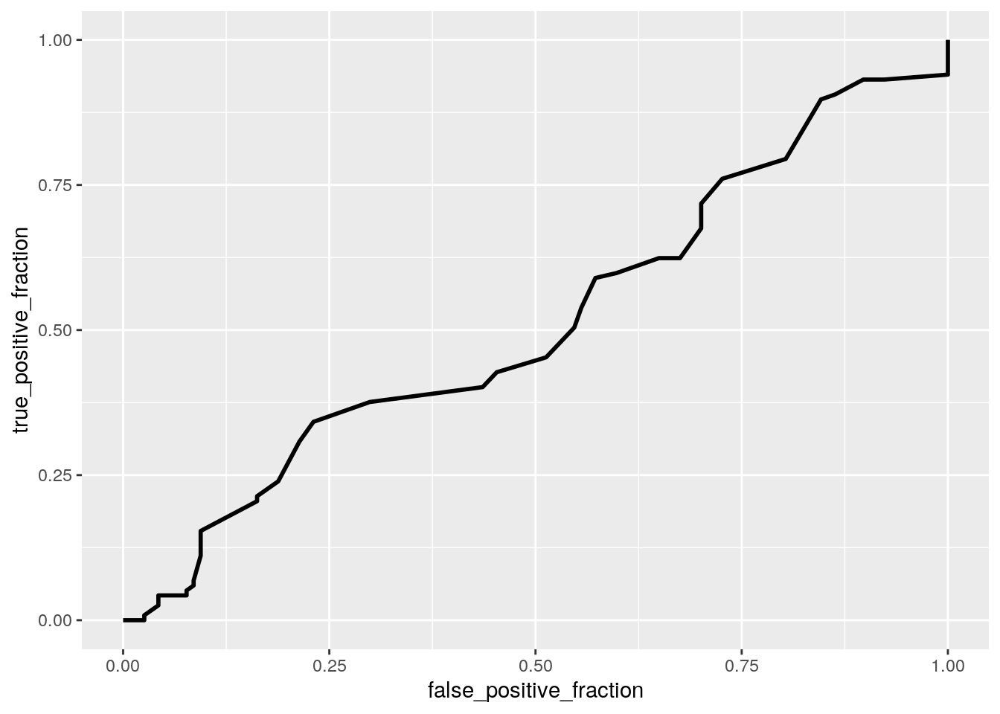

library(dplyr)##
## Attaching package: 'dplyr'## The following objects are masked from 'package:stats':
##
## filter, lag## The following objects are masked from 'package:base':
##
## intersect, setdiff, setequal, unionlibrary(ggplot2)
library(tidyverse)## ── Attaching packages ──────────────────────────────────────────── tidyverse 1.3.0 ──## ✓ tibble 3.0.3 ✓ purrr 0.3.4
## ✓ tidyr 1.1.1 ✓ stringr 1.4.0
## ✓ readr 1.3.1 ✓ forcats 0.5.0## ── Conflicts ─────────────────────────────────────────────── tidyverse_conflicts() ──
## x dplyr::filter() masks stats::filter()
## x dplyr::lag() masks stats::lag()library(tidyr)
mpg<-read.csv("mpg.csv")
mpg1<- mpg%>%select(manufacturer,model,year,cyl,trans,drv,cty,hwy,fl,class)%>%mutate(yrbi=year)%>%mutate(yrbi=recode(yrbi, "1999"="0","2008"="1"))
mpg1$fuelecon<-(mpg1$cty*.55)+(mpg1$hwy*.45)
mpg1$cyl<-as.character(mpg1$cyl)
mpg1$class<-as.character(mpg1$class)
mpg1$yrbi<-as.numeric(mpg1$yrbi)
manova <- manova(cbind(cty,hwy) ~ cyl, data = mpg1)
summary(manova)## Df Pillai approx F num Df den Df Pr(>F)
## cyl 3 0.66879 38.517 6 460 < 2.2e-16 ***
## Residuals 230
## ---
## Signif. codes: 0 '***' 0.001 '**' 0.01 '*' 0.05 '.' 0.1 ' ' 1library(rstatix)##
## Attaching package: 'rstatix'## The following object is masked from 'package:stats':
##
## filtergroup <- mpg1$cyl
DVs <- mpg1 %>% select(cty,hwy)
sapply(split(DVs,group), mshapiro_test)## 4 5 6 8
## statistic 0.8844961 0.6297763 0.9655373 0.9158503
## p.value 2.533174e-06 0.001240726 0.03125901 0.0001740117box_m(DVs, group)## # A tibble: 1 x 4
## statistic p.value parameter method
## <dbl> <dbl> <dbl> <chr>
## 1 89.7 1.90e-15 9 Box's M-test for Homogeneity of Covariance Matri…anova<-aov(cty~cyl,data=mpg1)
anova1<-aov(hwy~cyl,data=mpg1)
summary(anova)## Df Sum Sq Mean Sq F value Pr(>F)
## cyl 3 2770 923.3 146.4 <2e-16 ***
## Residuals 230 1450 6.3
## ---
## Signif. codes: 0 '***' 0.001 '**' 0.01 '*' 0.05 '.' 0.1 ' ' 1summary(anova1)## Df Sum Sq Mean Sq F value Pr(>F)
## cyl 3 4836 1612.1 108.2 <2e-16 ***
## Residuals 230 3425 14.9
## ---
## Signif. codes: 0 '***' 0.001 '**' 0.01 '*' 0.05 '.' 0.1 ' ' 1pairwise.t.test(mpg1$cty,mpg$cyl, p.adj = "none")##
## Pairwise comparisons using t tests with pooled SD
##
## data: mpg1$cty and mpg$cyl
##
## 4 5 6
## 5 0.691 - -
## 6 < 2e-16 0.001 -
## 8 < 2e-16 3.6e-09 2.5e-16
##
## P value adjustment method: nonepairwise.t.test(mpg1$hwy,mpg$cyl, p.adj = "none")##
## Pairwise comparisons using t tests with pooled SD
##
## data: mpg1$hwy and mpg$cyl
##
## 4 5 6
## 5 0.979 - -
## 6 < 2e-16 0.003 -
## 8 < 2e-16 5.9e-08 1.7e-14
##
## P value adjustment method: nonepairwise.t.test(mpg1$cty,mpg$cyl, p.adj = "bonferroni")##
## Pairwise comparisons using t tests with pooled SD
##
## data: mpg1$cty and mpg$cyl
##
## 4 5 6
## 5 1.0000 - -
## 6 < 2e-16 0.0061 -
## 8 < 2e-16 2.1e-08 1.5e-15
##
## P value adjustment method: bonferronipairwise.t.test(mpg1$hwy,mpg$cyl, p.adj = "bonferroni")##
## Pairwise comparisons using t tests with pooled SD
##
## data: mpg1$hwy and mpg$cyl
##
## 4 5 6
## 5 1.000 - -
## 6 < 2e-16 0.018 -
## 8 < 2e-16 3.5e-07 1.0e-13
##
## P value adjustment method: bonferronimedian(mpg1$hwy)## [1] 24medhwy<-ifelse(mpg1$hwy<median(mpg1$hwy),"low","high")
cyl<-mpg1$cyl
table(cyl,medhwy)## medhwy
## cyl high low
## 4 75 6
## 5 4 0
## 6 45 34
## 8 5 65chitest<-chisq.test(table(cyl,medhwy),simulate.p.value = TRUE,B=5000)
chitest##
## Pearson's Chi-squared test with simulated p-value (based on 5000
## replicates)
##
## data: table(cyl, medhwy)
## X-squared = 114.48, df = NA, p-value = 2e-04ggplot(mpg1,aes(hwy,fill=cyl))+geom_histogram()+ facet_wrap(~cyl,ncol=2)+theme(legend.position="none")+labs(title = "Highway Gas Mileage by Number of Cyclinders in Engine", subtitle = "Chi-Squared Test X-squared = 114.48, df = NA, p-value = 2e-04")## `stat_bin()` using `bins = 30`. Pick better value with `binwidth`. #This displays that the majority of 8 cyclinder engines fall below the medium highway gas mileage of 24 mpg and the majority of 4 cyclinder engines get more than 24 mpg while 6 cylinder engines are fairly evenly split. This displays there is a relationship between miles per gallon and number of cyclinders in the engine.
library(lmtest)## Loading required package: zoo##
## Attaching package: 'zoo'## The following objects are masked from 'package:base':
##
## as.Date, as.Date.numericcor(mpg1$cty,mpg1$hwy)## [1] 0.9559159x<-scale(mpg1$cty)
x1<-scale(mpg1$hwy)
fit1<-lm(x~x1, data=mpg1)
coef(fit1)## (Intercept) x1
## 9.552121e-17 9.559159e-01coeftest(fit1)##
## t test of coefficients:
##
## Estimate Std. Error t value Pr(>|t|)
## (Intercept) 9.5521e-17 1.9237e-02 0.000 1
## x1 9.5592e-01 1.9278e-02 49.585 <2e-16 ***
## ---
## Signif. codes: 0 '***' 0.001 '**' 0.01 '*' 0.05 '.' 0.1 ' ' 1ggplot(data.frame(x,x1), aes(x,x1))+geom_point()+geom_smooth(method="lm",se=T)## `geom_smooth()` using formula 'y ~ x' #Linearity and Homoskedasticity
resids<-fit1$residuals
fitvals<-fit1$fitted.values
ggplot()+geom_point(aes(fitvals,resids))+geom_hline(yintercept=0, color='red') #This data appears to linear and appears to be normally distributed.
ggplot()+geom_histogram(aes(resids),bins=40) #This data appears to be relatively normal though it does have outliers on the upper end and has more observations on the lower end.
library(sandwich)
coeftest(fit1, vcov=vcovHC(fit1))##
## t test of coefficients:
##
## Estimate Std. Error t value Pr(>|t|)
## (Intercept) 9.5521e-17 1.9368e-02 0.000 1
## x1 9.5592e-01 2.4493e-02 39.029 <2e-16 ***
## ---
## Signif. codes: 0 '***' 0.001 '**' 0.01 '*' 0.05 '.' 0.1 ' ' 1fit2<-lm(x~x1, data=mpg1)y<-mpg1$yrbi
fit<-glm(y~cty+hwy,data=mpg1,family="binomial")
coeftest(fit)##
## z test of coefficients:
##
## Estimate Std. Error z value Pr(>|z|)
## (Intercept) 0.171375 0.546614 0.3135 0.75389
## cty -0.219340 0.108299 -2.0253 0.04283 *
## hwy 0.150440 0.077076 1.9518 0.05096 .
## ---
## Signif. codes: 0 '***' 0.001 '**' 0.01 '*' 0.05 '.' 0.1 ' ' 1prob<-predict(fit,type="response")
pred<-ifelse(prob>.5,1,0)
table(prediction=pred, truth=mpg1$yrbi)%>%addmargins## truth
## prediction 0 1 Sum
## 0 63 52 115
## 1 54 65 119
## Sum 117 117 234(63+65)/234## [1] 0.547008565/117## [1] 0.555555663/117## [1] 0.538461565/119## [1] 0.5462185library(plotROC)
ROCplot<-ggplot(mpg1)+geom_roc(aes(d=y,m=cty+hwy), n.cuts=0)
ROCplot #This plot displays how the this model is bad at predicting year of the car based on city and highway mpg.
calc_auc(ROCplot)## PANEL group AUC
## 1 1 -1 0.5121265fit5<-glm(y~cty+hwy+class+fl+drv+model+manufacturer,data=mpg1,family="binomial")
coeftest(fit5)##
## z test of coefficients:
##
## Estimate Std. Error z value Pr(>|z|)
## (Intercept) -3.937308 3956.183128 -0.0010 0.9992059
## cty -0.524043 0.221151 -2.3696 0.0178067 *
## hwy 1.016143 0.211368 4.8075 1.529e-06 ***
## classcompact 38.150668 2713.444284 0.0141 0.9887822
## classmidsize 71.512062 4304.680720 0.0166 0.9867456
## classminivan 4.552056 2.015282 2.2588 0.0238977 *
## classpickup 6.562669 2.459244 2.6686 0.0076175 **
## classsubcompact 4.197380 1.560269 2.6902 0.0071417 **
## classsuv 6.446029 2.116983 3.0449 0.0023275 **
## fld -23.539168 3956.181033 -0.0059 0.9952526
## fle 5.573022 4162.253405 0.0013 0.9989317
## flp -11.792034 3956.180595 -0.0030 0.9976218
## flr -14.624802 3956.180515 -0.0037 0.9970505
## drvf -1.178517 2.062091 -0.5715 0.5676502
## drvr -0.942253 1.736270 -0.5427 0.5873444
## modela4 -40.458479 2713.444334 -0.0149 0.9881037
## modela4 quattro -39.613887 2713.444804 -0.0146 0.9883520
## modela6 quattro -71.020542 4304.681148 -0.0165 0.9868367
## modelaltima -54.019516 3853.574261 -0.0140 0.9888156
## modelc1500 suburban 2wd 2.629223 1.871268 1.4050 0.1600069
## modelcamry -70.475600 4304.680746 -0.0164 0.9869377
## modelcamry solara -36.941562 2713.444222 -0.0136 0.9891377
## modelcaravan 2wd NA NA NA NA
## modelcivic -5.519581 1.596348 -3.4576 0.0005449 ***
## modelcorolla -40.368985 2713.444480 -0.0149 0.9881300
## modelcorvette NA NA NA NA
## modeldakota pickup 4wd 1.012508 1.198100 0.8451 0.3980582
## modeldurango 4wd 1.643979 1.333444 1.2329 0.2176197
## modelexpedition 2wd 0.682730 1.826953 0.3737 0.7086285
## modelexplorer 4wd 0.106936 1.383608 0.0773 0.9383948
## modelf150 pickup 4wd 1.165498 1.280818 0.9100 0.3628417
## modelforester awd -3.496218 1.566326 -2.2321 0.0256075 *
## modelgrand cherokee 4wd 2.481106 1.513910 1.6389 0.1012398
## modelgrand prix -71.399052 4304.680764 -0.0166 0.9867666
## modelgti -37.843948 2713.444420 -0.0139 0.9888724
## modelimpreza awd -19.438748 1930.869527 -0.0101 0.9919675
## modeljetta -36.919787 2713.444216 -0.0136 0.9891441
## modelk1500 tahoe 4wd 1.392021 1.981346 0.7026 0.4823280
## modelland cruiser wagon 4wd 1.638247 1.908502 0.8584 0.3906748
## modelmalibu -69.385329 4304.680760 -0.0161 0.9871398
## modelmaxima -69.593580 4304.680824 -0.0162 0.9871012
## modelmountaineer 4wd 0.760242 1.535137 0.4952 0.6204394
## modelmustang NA NA NA NA
## modelnavigator 2wd NA NA NA NA
## modelnew beetle -3.069720 1.436341 -2.1372 0.0325833 *
## modelpassat -73.199842 4304.680704 -0.0170 0.9864329
## modelpathfinder 4wd -0.348342 2.359440 -0.1476 0.8826287
## modelram 1500 pickup 4wd 2.432348 1.248315 1.9485 0.0513546 .
## modelrange rover -0.040159 1.503798 -0.0267 0.9786951
## modelsonata -70.292407 4304.680735 -0.0163 0.9869717
## modeltiburon NA NA NA NA
## modeltoyota tacoma 4wd NA NA NA NA
## manufacturerchevrolet NA NA NA NA
## manufacturerdodge NA NA NA NA
## manufacturerford NA NA NA NA
## manufacturerhonda NA NA NA NA
## manufacturerhyundai NA NA NA NA
## manufacturerjeep NA NA NA NA
## manufacturerland rover NA NA NA NA
## manufacturerlincoln NA NA NA NA
## manufacturermercury NA NA NA NA
## manufacturernissan NA NA NA NA
## manufacturerpontiac NA NA NA NA
## manufacturersubaru NA NA NA NA
## manufacturertoyota NA NA NA NA
## manufacturervolkswagen NA NA NA NA
## ---
## Signif. codes: 0 '***' 0.001 '**' 0.01 '*' 0.05 '.' 0.1 ' ' 1prob<-predict(fit5,type="response")
pred<-ifelse(prob>.5,1,0)
table(prediction=pred, truth=mpg1$yrbi)%>%addmargins## truth
## prediction 0 1 Sum
## 0 94 36 130
## 1 23 81 104
## Sum 117 117 234#predict(fit, newdata=data.frame(yrbi=0), type= "link")